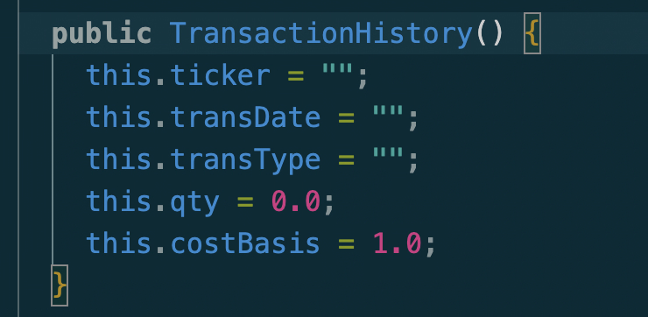
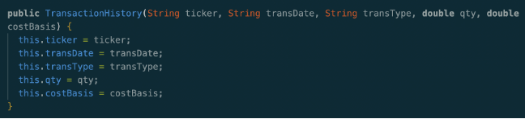
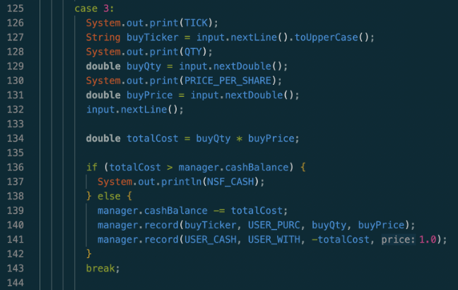
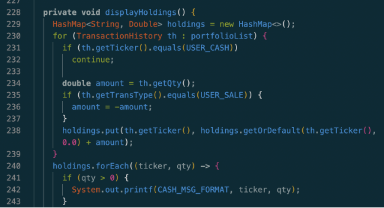
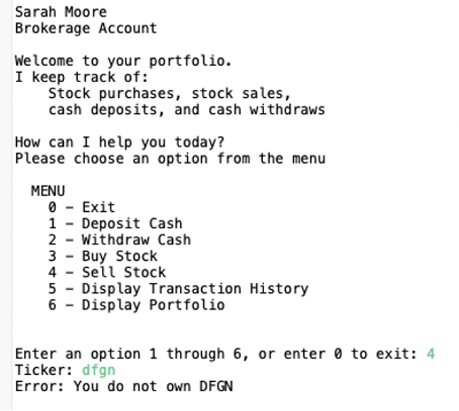
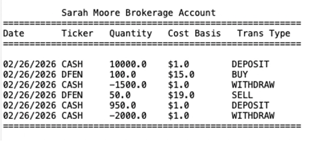

Role: Solo Backend Engineer
Context: ASU IFT210 Capstone (Scored 100/100)
Stack: Java 100% (Console CLI / Eclipse IDE)
Java OOP • Data Structures • FinTech Simulation
Role: Solo Backend Engineer
Context: ASU IFT210 Capstone (Scored 100/100)
Stack: Java 100% (Console CLI / Eclipse IDE)
Developed as the capstone final project for Arizona State University's IFT210 course, this desktop application simulates a real-world financial brokerage account. The system allows users to execute simulated investments while maintaining a strictly validated transactional history ledger that matches complex multi-action banking criteria.
The architecture isolates data state mutation by splitting logic into two core classes to ensure strict data boundaries:
TransactionHistory.java: A tightly encapsulated entity model using private fields (ticker, transDate, transType, qty, costBasis). State access is strictly funneled through explicit getters and setters.PortfolioManager.java: The core application execution engine managing the global runtime loop, interface strings, validation steps, and system memory state.The data layer utilizes a strict entity blueprint ensuring safe object instantiation through default and overloaded constructor state controls:
1.00 per rubric mandate.
Figure 1: Encapsulated TransactionHistory constructor implementation.
To simulate actual financial compliance standards, a single investment choice triggers a dual-entry transaction pairing mechanism. Buying or selling an asset does not just change an array value; it generates two distinct atomic objects concurrently inside a unified ArrayList<TransactionHistory> collection to preserve absolute data integrity:
Ticker: DFEN, Type: BUY, Qty: 100.0, Cost Basis: 15.0).Ticker: CASH, Type: WITHDRAW, Qty: -1500.0, Cost Basis: 1.00).
Figure 2: Automated dual-entry execution pairing mechanics.
The system implements strict validation guardrails inside the application loop before allowing state mutations, meeting exact production-grade requirements:

Figure 3: Runtime asset validation and mathematical guardrails.
Instead of maintaining a fragile, static, or hardcoded list of asset variables, the engine processes the full historical ledger stream into a live state snapshot completely on-demand:
SELL, the asset scalar maps into a negative value; if it is a BUY, it maps as positive.HashMap): The engine dynamically combines duplicate keys on the fly using a Java HashMap and the .getOrDefault() method. It calculates the live adjusted cost basis and actively hides completely liquidated or zero-balance tickers to ensure a perfectly clean profile layout.
Figure 4: HashMap timeline data array reduction logic.
The interface utilizes well-spaced text matrices to construct an organized, human-readable menu layout that handles input selection cleanly while intercepting non-integer data types smoothly.

Figure 5: User command interface and input handling menu layout.
The system outputs a tabular stream of raw data arrays, aligning columns dynamically with standard padding to guarantee clear visual hierarchy.

Figure 6: Formatted transactional tables stream and audit trails snapshot outputs.